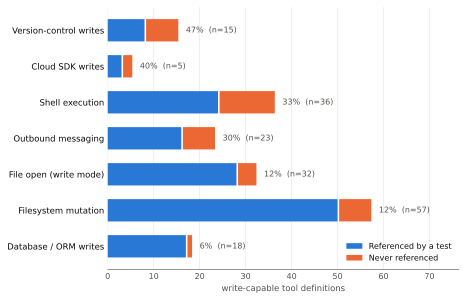
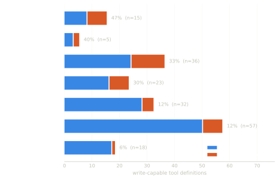
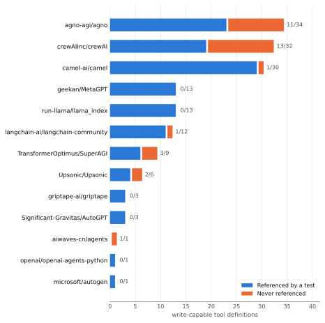
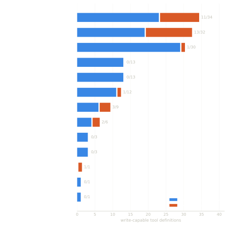

Manifesto
An agent with tool access is a program that spends money, deletes records and pushes code. The industry tests those programs by recording one reply and playing it back forever. That is not a gap in coverage. It is a category error.
Read paths and write paths fail differently. A read that returns the wrong document is wrong once. A write applied twice is wrong forever, and no amount of asserting on the response body will find it — because both responses are identical.
Every agent framework now ships tools that commit to git, delete cloud objects, run shell commands, execute SQL and move money. The testing practice they inherited came from HTTP clients that mostly fetched things.
Rather than assert that this is a problem, we measured it. We read 45 open-source agent repositories, mechanically extracted every framework-idiomatic tool definition, and kept the ones whose bodies actually mutate something.
Then we checked, tool by tool, whether any test in that project so much as names it. Not exercises it. Names it.
The evidence
158 write-capable tool definitions across 13 repositories, screened from 45 candidates. Wilson intervals throughout. The study runs on your machine in four minutes with no credentials, and re-runs itself weekly in CI.
32 of 158 write-capable tool definitions. 95% Wilson interval 14.7–27.2%. Restricted to repositories whose entire suite we read, 20.7%.
Tools that open pull requests, push commits and write files into a repository. The least covered category we found. 15 tools, CI 24.8–69.9%.
36 tools. The category with the least bounded blast radius — a shell tool can produce every other category's effects — and a third go untested.
The gap concentrates in large tool catalogues rather than spreading evenly. We report this because it qualifies the headline rather than flattering it.
From the paper




Figure 1: coverage by kind of write operation. The categories with the least bounded consequences are the least covered. Intervals are wide and overlap; the claim is only that the extremes separate.
Both figures are generated from
part_a/results.json by part_a/analyze.py. Full method in the
paper; every row behind them is on the data
page.
Not another recording. A model that holds state, so a second refund meets the first one, and a test can finally fail on it.
Passive capture that never alters a request. Real error codes and messages. Deterministic identifiers and an injectable clock, so a failure is a failure every time. MIT licensed, so it keeps working if we disappear.
Design partners
Stripe is the first one modelled. The next one should be chosen by a team with a real agent in production, not guessed at by us.